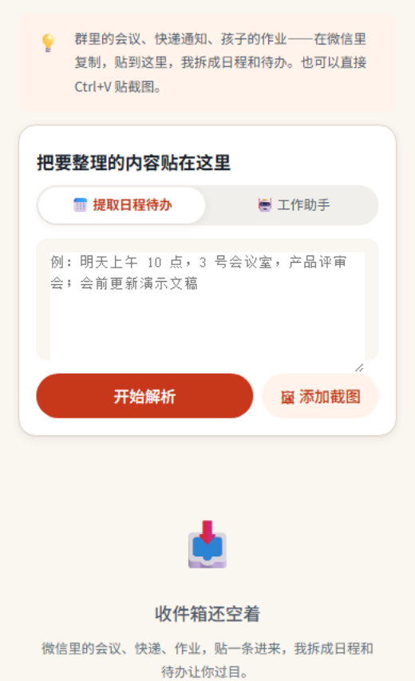
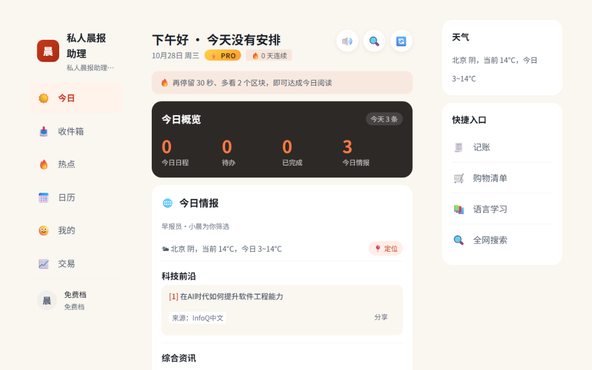
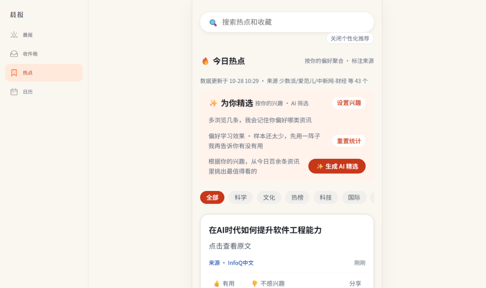

内测预热 · 早鸟名额开放中
转发的微信消息、截图和文章，AI 自动整理成日程、待办与收藏；每天清晨，一份私人晨报主动送到你手上——今日安排、天气和为你挑选的情报，还能语音播报。
AI 生成内容皆带标注 · 数据可随时导出与注销 · 免费码兑换永久可用
为什么要晨报
安排散落在各处，资讯刷不完，收藏等于白存——缺的不是自律，是一个每天替你收口的人。
工作和生活的安排埋在群聊、私聊和截图里，每天靠翻记录拼今天。
存了就等于学了，好文章再也没被回头看过，收藏来越堆越厚。
刷了半天热点，不知道哪条跟自己有关，越刷越焦虑。
私人晨报助理怎么工作
消息、截图、文章，粘贴即可，不用切应用。
自动生成日程、待办与收藏；时间冲突给候选时段，点选改期。
天气 + 今日安排 + 精选情报，还能语音播报。
核心功能
粘贴、送达、挑选——每天最重要的三件事，各有一个专职模块。
01 · 收件箱
转发或粘贴微信消息、截图（最多 3 张）、文章，AI 提取日程、待办与收藏，相对时间自动换算成绝对时间；与现有安排冲突时，给出候选时段，点选改期。

收件箱 · 粘贴即开始解析

晨报 · 今日概览与情报一次收齐
02 · 晨报
自适应开场：根据的日子日程前置，高优待办点名提醒；昨日收藏精选、天气与情报一次收齐；连续熬夜与周末轻量版，五分钟读完今天。
03 · 情报
12 个实时来源聚合资讯，跨源去重；热点跟与浏览历史自动沉淀兴趣画像；AI 精选每次至多 10 条并附推荐理由；每条强标注来源，断源时明确提示降级，绝不编造。

情报 · 每条带来源与推荐理由
还有这些
除了三件大事，日常里的杂活也一并接走。
42 格月历任你一眼看清，可导入手机日历提醒。
日程设为习惯，次日自动补位，不硬刚生活。
分队列报播报，做通告勤也能听完今天。
多平台比价，降价自动提醒；价格标注参考价，非实时。
学习记录、口语练习与成绩，每天进步一点。
18 项数据按账号隔离，冲突不静默覆盖。
省钱 · 顺手做的一件事
省心买已经并进晨报。同一件东西，价签常带比优惠券更大——设一句话，平台、补贴和领取时间一起摊开。
在晨报里看到想买的东西，直接说一句。三个平台一起比，价格、补贴口径、领取时间全部写明；低于历史价才提醒，凑单和会单独标注，不进到手价。
已包含在订阅里，不额外收费。
比价结果 · 每个价格都带平台、补贴口径与领取时间
学习 · 每天先解决一个卡点
灵犀课堂和口语都并进了晨报。实时 AI 课、四维错因归类、每周报告，现在只用认一个入口。
上课时可以随时打断，老师接着你的问题讲；下课错书自动整理；错了的题按错因归类进错题本。每周报告只回答一件事——你的掌握度涨了多少。
学习记录含多端同步的「今天」，和日程排在一起。
学习页 · 今日任务、继续上次、掌握度
运动 · 今天该跑还是缓跑
行波单练并进了晨报。恢复分、周负荷、配速趋势，和你的日程、睡眠放在一起看。
跑步页 · 今日建议、恢复分、周负荷
每次跑完给一个数据质量分——定位点数、断点、补点都算进去，不合格的记录不会混进趋势里。跑量与恢复放在一起看，才知道今天该冲还是该缓。
跑步记录也会直接进晨报的「今天」，和日程排在一起。
我们守住的红线
不说做不到的话。下面每一条，都写进了产品里。
数据来自真实采集与整合，兜底内容明确标注（参考 / 降级）。
提取结果、AI 精选等关键输出均带标识，分享导出同行。
数据按账号隔离，可随时导出；注销即删除，不拖不藏。
核心功能不设付费墙，语音与收藏额度真实记录。
网页端的模型通道只收文本，不做看图提取，需要读图时直接说明不支持；语音只在小程序端提供录入，网页端保留语音播报；数据拉不到时明确标注示例，不会拿内容把版面填满。
每一条红线，都能在 App 里对上
每条 AI 提取结果都带角标，分享、导出同样保留。
—— 见「待办处理，屏」数据按账号隔离，可随时导出；注销即删除。
—— 见「设置 · 数据与隐私」价格
支付通道随主体资质办理中。加入早鸟名单，上线前一天通知你，并锁定早鸟价。
订阅内容将按微信小程序虚拟支付规范接入；具体价格上线前公示。
常见问题
数据、合规、上线时间——这里不绕弯子。
本地存储加云同步，按账号隔离；可随时导出，注销后删除，15 个工作日内处理完毕。
会。提取结果、AI 精选、语音摘要等关键输出均显著标注「AI 生成」，分享与复制导出同样带标识。
日程、待办、基础晨报长期免费；语音与收藏有月度额度，用量真实记录，超额会提醒，不悄悄减配。
暂不能。支付通道随主体资质办理中；留下早鸟名单，上线前通知并锁定早鸟价。
微信小程序为主，H5 网页版同步可用，数据跨端一致。